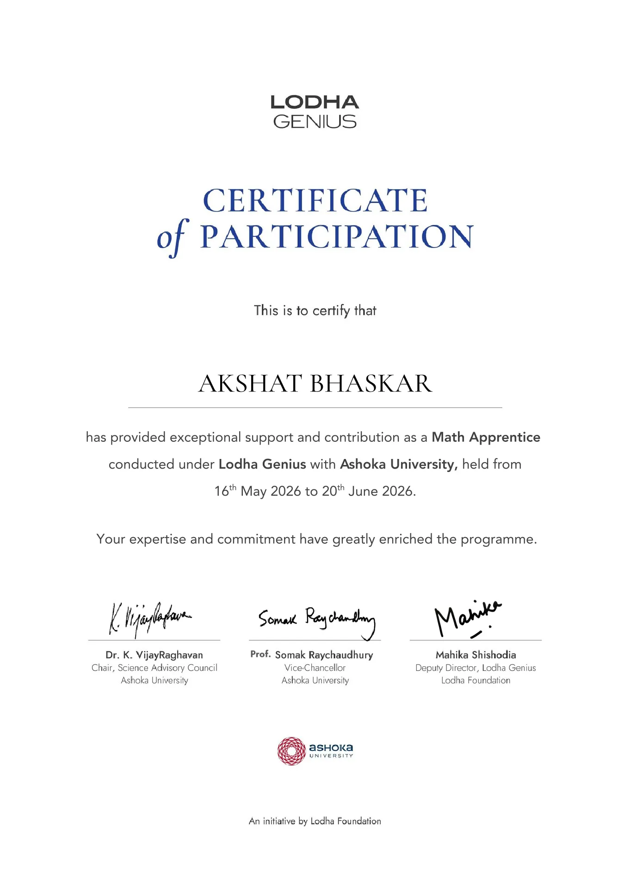
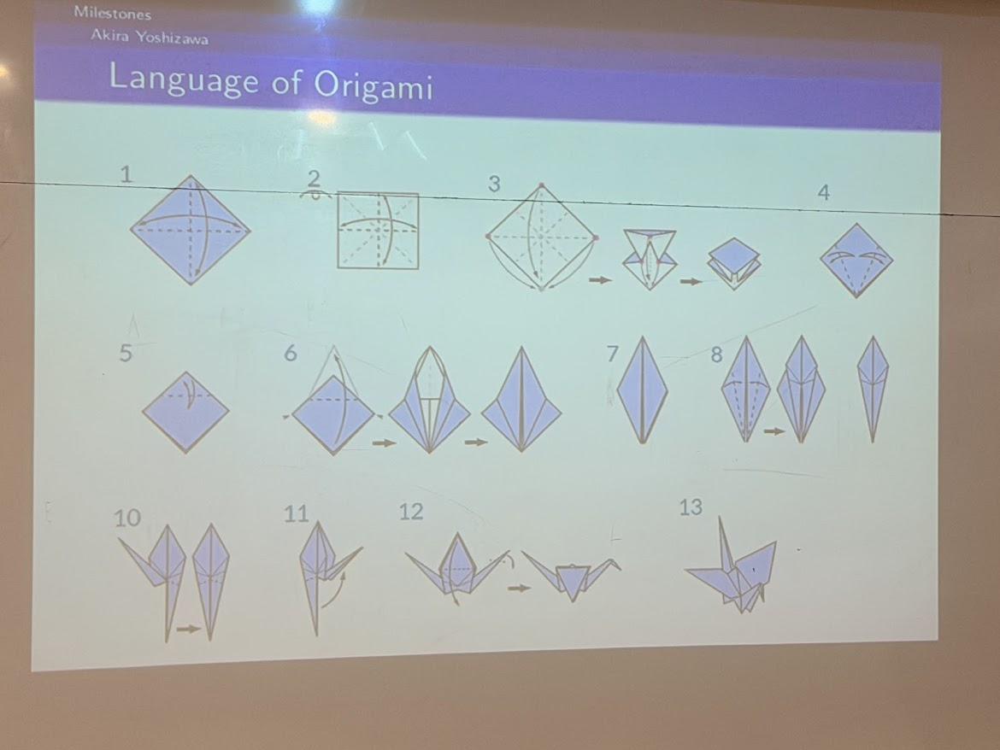
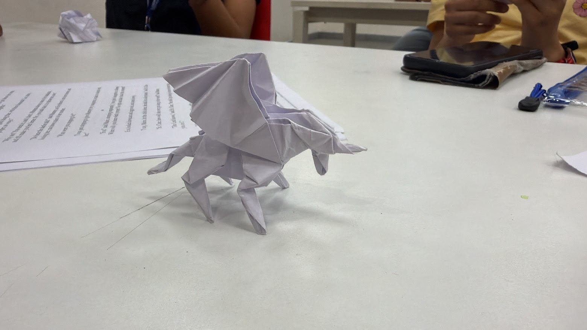
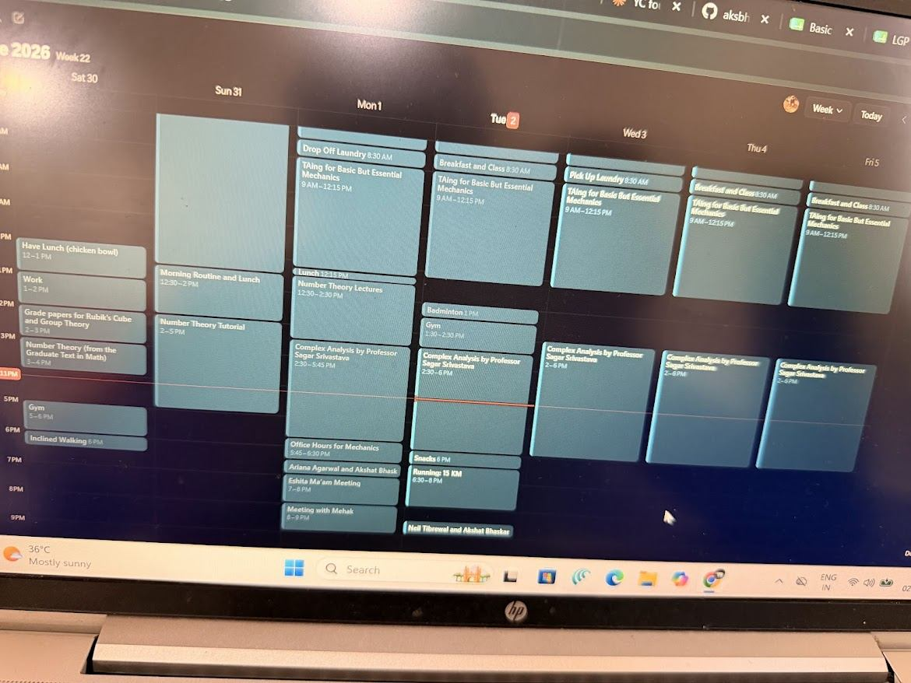

Modern Cryptography, Apprenticeship Lecture L.03, LG-AUP 2026
The Lodha Genius – Ashoka University Programme (LG-AUP) is a joint initiative between the Lodha Foundation and Ashoka University, offering a small cohort of exceptional undergraduate students studying mathematics across India a paid research and teaching position within one of India's finest mathematics departments. The programme draws faculty from IIT Delhi, IIT Kharagpur, Chennai Mathematical Institute (CMI), ISI Kolkata, ISI Delhi, Ashoka University, IIT Kanpur, IIIT Delhi, Iowa State University, Fordham University, and UC Davis, among many others.
This is an undergraduate-level research position. The programme made an explicit exception to its eligibility criteria to include me, as I had not yet begun my undergraduate studies when the programme ran. I was fully housed on the Ashoka campus for all six weeks.
My role
As Teaching Assistant, I supported mathematics and science instruction for gifted secondary school students working through undergraduate-level courses across four weeks and four disciplines. As Research Apprentice, I conducted original number theory research under direct faculty mentorship for the full duration of the programme, concluding with the submission of a formal research report.
Research placement
I conducted original research in number theory under the mentorship of Professor Shanta Laishram throughout the programme. The work culminated in a formal research report submitted to Professor Laishram at the programme's close.
Professor Shanta Laishram
Head of the Theoretical Statistics and Mathematics Unit (Stat-Math Unit) at Indian Statistical Institute (ISI), New Delhi
Professor Laishram is a distinguished mathematician widely recognised for his significant research contributions to number theory. His rigorous academic background and published work are highly respected in the mathematical community.
Working under Professor Shanta allowed me to engage seriously with number-theoretic problems before beginning an undergraduate degree, an opportunity I could not have anticipated when I first walked into the Lodha Genius Programme as a student in 2025.

Certificate of Appreciation, Lodha Genius 2026
Teaching
Over four weeks, I served as Teaching Assistant for courses spanning abstract algebra, classical mechanics, geometry, and personal finance, a range that reflects the programme's deliberate ambition. The student cohort was divided into tracks: Junior Track students were newer to formal mathematics; the Senior Science Track demanded genuine subject fluency and moved accordingly.
The fourth course, Origami with Advanced Geometry, made the most direct demands on mathematical knowledge. The course examines the rigorous structure underlying paper folding: crease patterns, flat-foldability, and the algebraic geometry that governs what can and cannot be constructed from a single uncut sheet. What looks decorative is, in practice, serious geometry.

Origami with Advanced Geometry, Senior Science Track, Week 4

A unicorn pegasus, made in class by a student

Teaching Assistant, Lodha Genius Programme 2026
Apprenticeship Lectures
Alongside the TA work, I attended a series of lectures designed specifically for the undergraduate apprentices, graduate-adjacent seminars that assumed real mathematical maturity and moved accordingly. Each was delivered by a specialist and treated as a self-contained mathematical event rather than a survey.
- Modular Forms: An Introduction to "Non-Abelian" Symmetry
- Statistical Modeling, the Foundation of Generative AI
- Modern Cryptography
The third lecture, Modern Cryptography, was a direct intersection with the number theory I was pursuing in research. The mathematics of encryption and the questions I was working through under Professor Shanta occupy the same territory: primality, modular arithmetic, the deep behaviour of integers. Sitting in that seminar with an active research context made it land differently than it otherwise would have.
Life at the Programme
Six weeks is long enough to build something. The programme housed everyone on campus, faculty, teaching assistants, students, which meant the work did not stop at the classroom door. The schedule was dense, the company was good, and the evenings had their own kind of curriculum.

Programme schedule, six weeks at Ashoka University